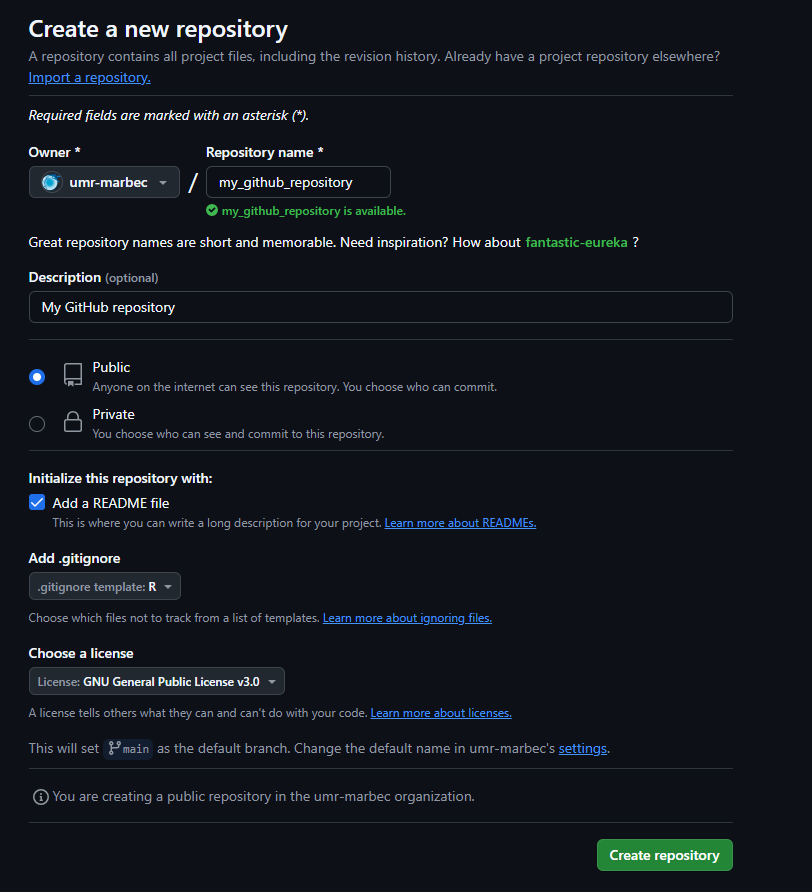
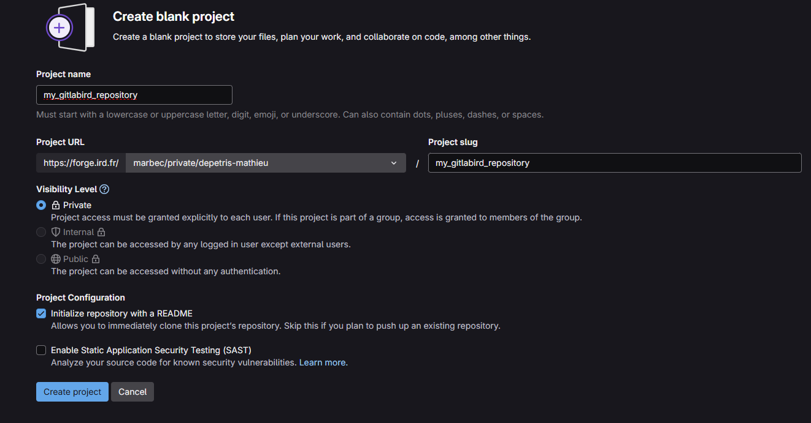
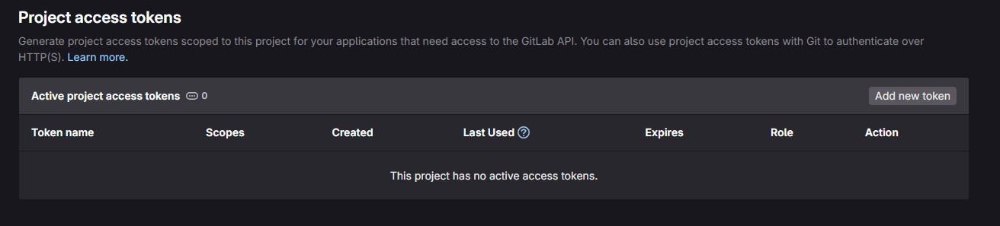
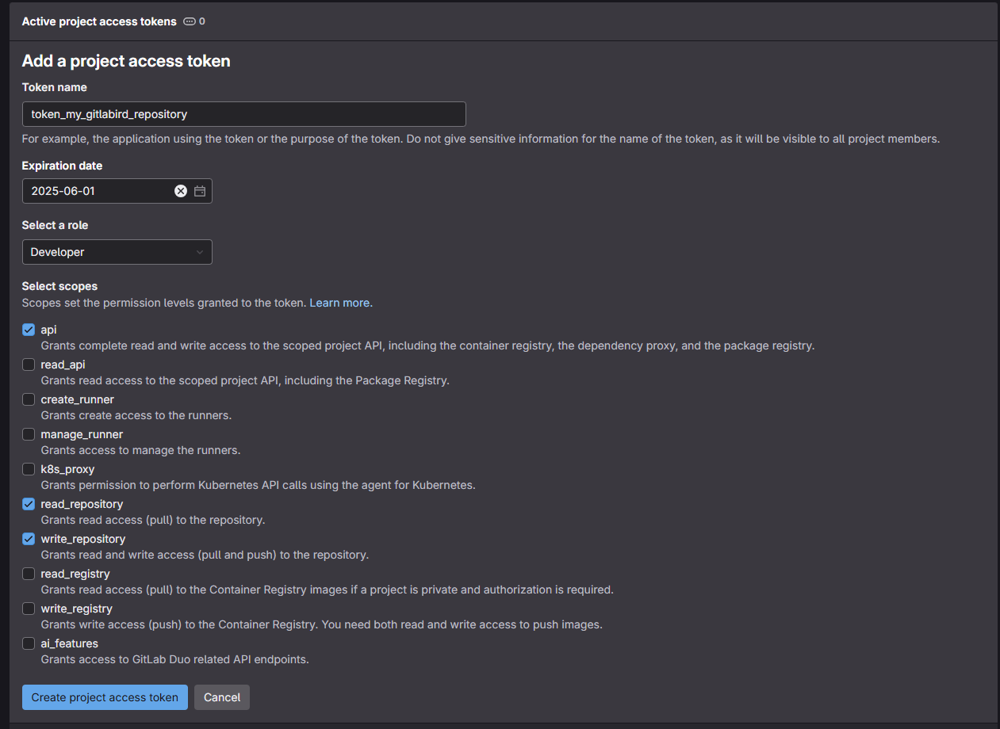
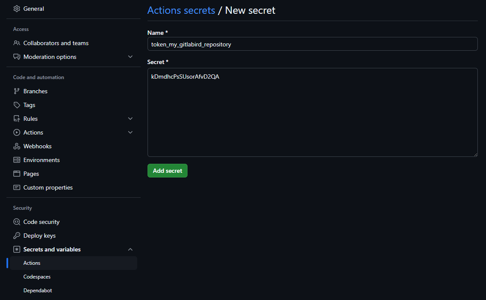
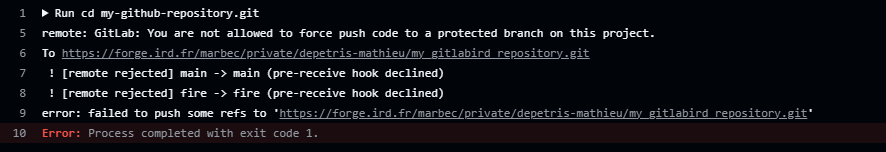
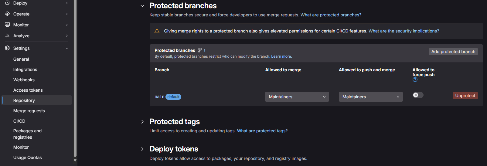

Pourquoi utiliser une forge Git ?
Dès lors que l’on commence à vouloir travailler en équipe sur des bouts de code, voir de manière générale sur des développements informatiques, l’utilisation d’un outil de contrôle de version est rapidement un outil incontournable et un allié précieux pour toute personne soucieuse de gérer efficacement son travail. Ici nous n’aborderons pas les caractéristiques d’un git, ou système de contrôle de version, mais nous proposons une solution pouvant aider à résoudre une question que l’on se pose souvent, à savoir vers quel système, ou forge, se tourner.
Un rapide coup d’œil sur internet vous montrera qu’il existe plusieurs forges. L’une des plus populaires est GitHub mais il en existe d’autres comme GitLab ou encore Bitbucket. Il est aussi tout à fait possible que votre institut ou organisme utilise l’un de ces systèmes pour héberger sa propre forge (jeter un coup d’œil ici). Chaque système présente des avantages et des inconvénients et votre choix doit être guidé par vos besoins. À titre d’exemple vous trouverez un rapide comparatif des principales forges dans le tableau ci-dessous.
| Critères | GitHub | GitLab | Bitbucket | Gitea |
|---|---|---|---|---|
| Popularité | Très élevée | Élevée | Moyenne | Faible |
| CI/CD intégré | GitHub Actions (simple et puissant) | Très robuste et flexible | Intégré, mais limité | Dépends de l’intégration manuelle |
| Open source | Non | Oui | Non | Oui |
| Hébergement gratuit | Dépôt privé gratuit illimité | Dépôt privé gratuit illimité | Dépôt privé gratuit illimité | Nécessite un serveur |
| Autohébergement | Non | Oui | Oui | Oui |
| Focus équipes privées | Moyen | Fort | Très fort (intégré à Jira) | Adapté |
Pourquoi se tourner vers GitHub ?
La procédure que vous êtes en train de lire vous propose une solution afin de copier de manière automatique le contenu d’un dépôt GitHub vers le dépôt d’une autre forge, tel que GitLab. Sans rentrer trop dans les délais et toujours en gardant à l’esprit que la selection de votre forge doit se faire en accord avec vos besoins, pourquoi avons-nous fait le choix de se tourner vers GitHub.
La raison principale est que GitHub propose par défaut un écosystème riche et surtout des intégrations natives, notamment via les GitHub actions. Ces outils sont vraiment des alliés très efficaces pour vos développements et facilitent grandement les processus d’intégration/déploiement continus. De nombreuses communautés, tels que la celle de R, a déjà mis à disposition de nombreuses “Github actions”. Ces dernières permettent d’automatiser de nombreux processus, qui vont aussi bien de la vérification de votre code, que de la publication de documentation associée aux développements/packages. De plus, une grande partie des workflows peut être centralisée via GitHub, ce qui réduit considérable la dépendance à d’autres outils tiers.
Par ailleurs, GitHub est la forge la plus utilisée au monde, avec une immense communauté d’utilisateur. Concrètement il est très difficile pour une autre forge de rivaliser au niveau du référencement ou de la visibilité de GitHub. De plus, de nombreuses fonctionnalités, comme la section Discussions ou encore l’affichage ouvert des contributions, renforcent la collaboration et son interface est souvent perçue comme étant la plus simple et intuitive parmi les forges.
Outre le fait qu’il soit largement adopté par les entreprises et les projets open source, le volet IA de GitHub, via son utilitaire GitHub Copilot, peut être une aide dans la construction de vos ressources.
Pour finir, la version gratuite est déjà très performante et présente l’avantage de proposer des dépôts privés illimités ainsi que la collaboration avec plusieurs contributeurs sans frais supplémentaires.
Pourquoi ne pas utiliser uniquement GitHub ?
Au vu de la section précédente, on peut se demander pourquoi ne pas utiliser uniquement GitHub qui semble être le choix le plus judicieux. Malgré tous ces avantages, il ne faut pas oublier que GitHub reste la propriété de Microsoft et que par conséquent il est possible qu’un futur changement de la politique commerciale de Microsoft ne devienne pénalisant ou même incompatible avec votre travail. Même s’il est peu probable qu’une telle évolution soit “brutale” au point de ne pas vous permettre de prendre les mesures nécessaires, il peut être judicieux de réfléchir à des solutions permettant en quelque sorte de profiter du meilleur des mondes mis à notre disposition.
L’objectif de cette procédure est donc de fournir une solution qui permet de copier, de manière automatique, l’intégralité d’un dépôt GitHub vers une autre forge. Pour ce tutoriel nous prendrons l’exemple d’une forge GitLab hébergé par l’IRD.
Procédure pour créer un miroir entre deux dépôts (GitHub vers GitLab IRD)
Prérequis et cadre de la procédure
Afin de suivre au mieux la procédure, il est conseillé d’être un minimum familiarisé avec l’utilisation d’une forge git, idéalement GitHub. Par ailleurs, nous partirons du principe que vous disposez d’un compte correctement configuré sur GitHub et la forge de destination (pour l’exemple ici le GitLab de l’IRD). Au besoin, vous trouverez l’adresse mail de la personne ressource à l’origine de cette procédure en haut de la page. N’hésitez pas à la contacter si vous avez besoin d’aide.
Pour informatique, les images en lien avec la procédure ont été générées via des interfaces en anglais, ce qui devrait être la configuration par défaut sur la majorité des logiciels concernés.
| Système d’exploitation | Procédure fonctionnelle | Édition et version |
|---|---|---|
| Windows | Oui | 11 Professionnel, version 23H2 |
| Mac | Non testée | |
| Linux | Non testée |
1. Initialisation des dépôts
1.1 Création d’un dépôt source sur GitHub
Tout d’abord nous allons créer un dépôt source sur la forge GitHub. Pour l’exemple ici nous avons créé un dépôt public nommé “my_github_repository” avec des paramètres initiaux configuré globalement pour abriter des codes R (figure 1).

Pour information notre test ici créer un dépôt “public”, car nous sommes parties du principe que notre contenu en développement a vocation à être partagé avec tout le monde et ne présente aucun caractère confidentiel ou privé. Vous pouvez tout à fait appliquer cette procédure sur un dépôt “private” (à tester, peut-être certains paramètres en lien avec les secrets cités plus loin devront être modifiés), mais dans ce cas il est judicieux de réfléchir à la véracité d’utiliser GitHub pour des données qui présentent un caractère privé. Cela ne veut pas dire de ne jamais publier des répertoires privés sur GitHub, mais de ne pas oublier que malgré tous les bénéfices, GitHub reste une forge propriétaire de Microsoft.
1.2 Création d’un dépôt cible sur une autre forge
La seconde étape est de créer un second dépôt cible sur une autre forge. Comme cité précédemment, nous allons utiliser une forge GitLab hébergé par l’IRD, auquel les personnels de l’UMR peuvent avoir accès. Vous trouverez dans la figure 2 ci-dessous un exemple de configuration.

Vous noterez, en opposition à notre configuration de notre dépôt source GitHub, que notre dépôt est ici publié en “private”. Cela se justifie afin de minimiser les “interactions” que les utilisateurs peuvent avoir sur ce dépôt. Vous allez voir par la suite que nous allons automatiser le flux de données entre notre dépôt source (GitHub) et notre dépôt cible (GitLab de l’IRD) et au final vous n’allez pas interagir directement sur le dépôt cible, comme l’on va le faire sur notre dépôt source au cours de sa vie. Encore pire, le flux de données que nous allons créer va être un flux unidirectionnel vers notre dépôt source, des modifications directes sur ce dépôt ne seront surement pas sauvegardées, risqueraient de provoquer des troubles dans l’automatisation et seraient même contraires à la logique de la procédure.
2. Connexion entre les deux forges
Maintenant que nous avons créé les deux dépôts, il va falloir établir une connexion entre eux. Il y a plusieurs manières de faire, mais ce que nous allons utiliser ici s’appelle la création d’un jeton d’accès, ou “token”. Certains d’entre vous ont déjà dû effectuer cette action, notamment si vous avez fait une connexion entre un git et Rstudio. Nous n’allons pas rentrer dans les détails de la création d’un jeton d’accès et si besoin une procédure plus détaillée pourra être réalisée Juste pour résumer, nous allons créer un jeton d’accès depuis la forge du dépôt cible, que nous allons renseigner ensuite au niveau du dépôt source.
2.1 Création d’un jeton d’accès sur le dépôt cible
Pour effectuer cela, il suffit de se placer au niveau de la racine de notre dépôt cible (ici celui que nous avons appelé “my_gitlabird_repository”). Dans le menu à gauche vous devriez voir une section “Settings” et une sous-section “Access tokens”. Cela devrait sous amener sur l’onglet de la figure 3.

Pour créer un nouveau jeton d’accès, il suffit de cliquer sur l’onglet “Add new token”. Dans la nouvelle fenêtre, vous trouverez plusieurs onglets à renseigner :
- “Token name”, le nom du jeton d’accès. Idéalement le nom doit être assez explicite et vous permettre de comprendre à quoi il sert. La plupart d’entre nous n’auront pas plus d’un jeton d’accès par dépôt, mais il est possible d’en ajouter plusieurs et dans ce cas il faut pouvoir les identifier.
- “Expiration date”, il s’agit de la date d’expiration du jeton d’accès. D’un point de vue sécuritaire, il peut être dangereux de créer un jeton qui ne possède pas de date d’expiration (si on clique sur la croix à droite de la date). Au-delà de la simplicité de faire cela (on n’a plus à s’occuper de notre connexion), créer une connexion via un jeton d’accès va créer une “faille” potentielle dans la sécurité de votre dépôt qui pourra servir de point d’entrée à de potentielles attaques malveillantes. Il ne faut pas devenir paranoïaque, mais l’idée est plus d’avoir une réflexion sur la durée de vie de votre jeton. Mon projet est-il un projet à court terme ? Y a-t-il une échéance future qui est susceptible de modifier la pertinence de ce jeton (par exemple modification de l’intégrité du dépôt source) ? concrètement vais-je penser à supprimer mon jeton d’accès si je n’en ai plus besoin. Libre à vous de fixer vos propres règles. Ici par exemple nous avons identifié un jeton qui sera valide jusqu’au 01/05/2025.
- “Select a role”. Dans le cas de l’utilisation d’un jeton d’accès personnel pour effectuer des actions de miroir depuis GitHub vers GitLab, nous n’avons pas besoin de nous concentrer directement sur les rôles, car les “scopes” de la section suivante sont ce qui détermine les permissions du jeton. Cependant, le rôle associé à un jeton d’accès personnel peut influencer certaines permissions d’accès à des projets ou des groupes. Si l’on veut être rigoureux, le plus judicieux est de choisir un rôle comme “Developer”. Un développeur va être une entité qui peut pousser du code, créer des branches, faire des “pull requests” et gérer les dépôts (ce que nous voulons faire ici).
- “Selected scopes”. Cette dernière section celle qui va définir les permissions et concrètement à quoi l’on peut avoir accès grâce à notre jeton. Pour faire un miroir, nous avons besoin de 3 droits spécifiques :
- “api” : permets d’effectuer toutes les actions de l’API, y compris la gestion des dépôts, des projets, etc.
- “write_repository” : permets de pousser dans les dépôts GitLab (nécessaire pour le miroir).
- “read_repository” : permets de lire les dépôts GitLab (si nécessaire pour la configuration ou la vérification).

Valider votre configuration via le bouton “Create project access token” en bas.
La prochaine page qui s’affiche devrait vous indiquer la validation de la création de votre jeton d’accès, mais aussi vous présenter sa valeur. Vous pouvez l’afficher en cliquant sur bouton en forme d’œil. Juste en dessous de votre jeton, vous remarquerez un message vous indiquant que ce jeton ne sera dévoilé uniquement maintenant et il ne sera plus possible par la suite de la visualiser (dans un souci de sécurité). L’idée est de le copier (cliquez que le bouton situé à droite de celui en forme d’œil), de le stocker quelque part (par exemple dans un gestionnaire de mots de passe) car nous allons devoir le renseigner dans notre a source GitHub.
2.2 Renseignement de notre jeton d’accès sur le dépôt source
Maintenant que nous avons notre jeton d’accès pour notre dépôt cible, il va falloir le renseigner au niveau de notre dépôt source. Pour cela, il faut se rendre sur la page de notre dépôt source (dans l’exemple, le dépôt GitHub que nous avons appelé “my_github_repository”), de cliquer sur l’onglet “Settings”, la section “Secrets and variables” et la sous-section “Actions”. Dans la nouvelle page qui s’affiche, cliquez sur le bouton “New respository secret” situé dans la partie “Repository secrets”. Il vous suffit ensuite de renseigner un nom pour ce secret (comme précédent il doit être parlant pour l’utilisateur) et de coller la valeur de votre jeton dans la partie “Secret” (figure 5).

3. Création du processus de miroir et automatisation
3.1 Création du script “GitHub Action”
Nos deux dépôts étant connectés, nous pouvons maintenant commencer à travailler sur la création du processus de miroir ainsi que son automatisation. Pour faire cela, nous allons créer une “GitHub action”. Nous en avons parlé précédemment, mais ce type de processus va nous permettre d’exécuter des processus en arrière-plan et surtout d’automatiser le lancement de ces derniers.
Pour faire cela, nous avons deux possibilités, (1) créer et adapter manuellement notre fichier yaml associé à la “GitHub Action” ou (2) utiliser une fonction du package sparck qui va nous simplifier les étapes de création.
3.1.1 Création et adaptation manuelle de la “GitHub Action”
Concrètement pour cela, nous devons nous rendre à la racine de notre dépôt source GitHub et de créer un dossier “.github” ainsi qu’un sous dossier “workflows”. À l’intérieur de ce dernier dossier, nous allons copier le code ci-dessous dans un éditeur de code source (type Notepad ou encore Visual Studio Code).
name: GitHub to GitLab IRD mirror with release assets
on:
push:
branches:
- '**'
tags:
- '**'
pull_request:
branches:
- '**'
delete:
branches:
- '**'
tags:
- '**'
release:
types:
- created
- published
- edited
- deleted
jobs:
mirror:
runs-on: ubuntu-latest
steps:
- name: Clone repository as bare
run: |
git clone --bare <github_repository_source_url>.git my-github-repository.git
- name: Set up Git
run: |
git config --global user.name "GitHub Actions"
git config --global user.email "github-actions@users.noreply.github.com"
- name: Add forge remote
run: |
cd my-github-repository.git
git remote add mirror https://oauth2:${{ secrets.<secret_token_name> }}@<git_repository_target_url>.git
- name: Push to forge
run: |
cd my-github-repository.git
git push --mirror mirror
download-release-assets:
runs-on: ubuntu-latest
needs: mirror
steps:
- name: Set up Git (Authentication)
run: |
git config --global user.name "GitHub Actions"
git config --global user.email "github-actions@users.noreply.github.com"
- name: Fetch release(s) from GitHub
id: fetch_releases
run: |
RESPONSE=$(curl -s -H "Authorization: token ${{ secrets.GITHUB_TOKEN }}" \
"https://api.github.com/repos/<github_repository_source_url_api>/releases")
RELEASE_IDS_NAMES=$(echo "$RESPONSE" | jq -r '.[] | "\(.id) \(.name)"')
if [ -z "$RELEASE_IDS_NAMES" ]; then
echo "No release found. No action required."
echo "SKIP_NEXT_STEP=true" >> $GITHUB_ENV
exit 0
fi
NUM_RELEASES=$(echo "$RELEASE_IDS_NAMES" | wc -l)
echo "Number of releases found: $NUM_RELEASES"
echo "NUM_RELEASES=$NUM_RELEASES" >> $GITHUB_ENV
RELEASE_IDS=""
RELEASE_NAMES=""
while IFS= read -r line; do
RELEASE_ID=$(echo "$line" | awk '{print $1}')
RELEASE_NAME=$(echo "$line" | awk '{print $2}')
RELEASE_IDS="$RELEASE_IDS$RELEASE_ID,"
RELEASE_NAMES="$RELEASE_NAMES$RELEASE_NAME,"
done <<< "$RELEASE_IDS_NAMES"
RELEASE_IDS=${RELEASE_IDS%,}
RELEASE_NAMES=${RELEASE_NAMES%,}
echo "RELEASE_IDS=$RELEASE_IDS" >> $GITHUB_ENV
echo "RELEASE_NAMES=$RELEASE_NAMES" >> $GITHUB_ENV
- name: Download release(s) asset(s) from GitHub
id: download_assets
if: ${{ env.SKIP_NEXT_STEP != 'true' }}
run: |
ASSETS_FOUND=false
NUM_RELEASES=${{ env.NUM_RELEASES }}
RELEASE_IDS=${{ env.RELEASE_IDS }}
RELEASE_NAMES=${{ env.RELEASE_NAMES }}
IFS=',' read -ra RELEASE_IDS_ARRAY <<< "$RELEASE_IDS"
IFS=',' read -ra RELEASE_NAMES_ARRAY <<< "$RELEASE_NAMES"
for num_release in $(seq 0 $((NUM_RELEASES - 1))); do
RELEASE_ID="${RELEASE_IDS_ARRAY[$num_release]}"
RELEASE_NAME="${RELEASE_NAMES_ARRAY[$num_release]}"
echo "Processing release ID: $RELEASE_ID with Name: $RELEASE_NAME"
ASSETS=$(curl -s \
-H "Authorization: token ${{ secrets.GITHUB_TOKEN }}" \
"https://api.github.com/repos/<github_repository_source_url_api>/releases/$RELEASE_ID/assets" \
| jq -r '.[].browser_download_url')
if [ -z "$ASSETS" ]; then
echo "No assets found for release $RELEASE_ID ($RELEASE_NAME). Skipping download step."
continue
else
ASSETS_FOUND=true
mkdir -p "release-assets/$RELEASE_ID"_"$RELEASE_NAME"
cd "release-assets/$RELEASE_ID"_"$RELEASE_NAME"
for URL in $ASSETS; do
echo "Downloading $URL"
curl -L -o "$(basename "$URL")" -H "Authorization: token ${{ secrets.GITHUB_TOKEN }}" "$URL"
done
cd -
fi
done
if [ "$ASSETS_FOUND" = false ]; then
echo "No assets found for any release. Exiting."
echo "SKIP_NEXT_STEP=true" >> $GITHUB_ENV
exit 0
fi
- name: Push asset(s) to mirror repository
id: push_mirror
if: ${{ env.SKIP_NEXT_STEP != 'true' }}
run: |
git clone https://oauth2:${{ secrets.<secret_token_name> }}@<git_repository_target_url>.git
cd test_miroir_github
if [ -d "release-assets" ]; then
echo "Removing existing release-assets directory from the mirror repository."
rm -rf release-assets
fi
echo "Copying local release-assets directory to the mirror repository."
cp -r "../release-assets" .
git add .
git commit -m "Add release assets from GitHub releases"
BRANCH_NAME=$(git symbolic-ref --short HEAD)
git push origin "$BRANCH_NAME"Dans ce script il sera nécessaire d’adapter certaines variables en fonction de votre environnement :
- <github_repository_source_url> pour l’adresse URL de votre répertoire source GitHub. Pour l’exemple ici on aura la valeur “https://github.com/umr-marbec/my_github_repository” (sans les guillemets, idem pour toutes les variables suivantes).
- <secret_token_name> qui va renseigner le nom du secret que nous avons identifié au niveau du dépôt source GitHub (lien section 2.2). Ici nous utiliserons “TOKEN_MY_GITLABIRD_REPOSITORY”. Attention, si vous remarquez dans la figure 5, le nom de mon secret était en minuscule. Par défaut, GitHub passe tous les caractères en majuscule.
- <git_repository_target_url> pour l’adresse ULR de votre dépôt cible, sans la valeur “https://” en début de chaine. Par exemple ici pour la forge de l’IRD on utilisera la valeur “forge.ird.fr/marbec/private/depetris-mathieu/my_gitlabird_repository”.
- <github_repository_source_url_api> pour l’adresse URD du répertoire source GitHub, mais en version “light” (sans “https://github.com/”). Pour notre exemple la valeur sera “umr-marbec/my_github_repository”.
Une fois que vous avez correctement remplacé ces variables, il vous suffit d’enregistrer le fichier au format YAML (au besoin l’extension à renseigner est .yml). Pour notre exemple ici, mon fichier s’appellera mirror_github_to_irdgitlab.yml et il sera placé comme indiqué précédemment dans le répertoire “workflows” que nous créer sur le dépôt cible GitHub.
3.1.2 Utilisation de la fonction add_github_action() du package sparck
Si vous préférez utiliser une approche simplifiée, vous pouvez utiliser comme cité précédemment le package R sparck et plus précisément la fonction associée add_github_action().
Pour cela, il faut commencer par l’installer sous R via la commande suivante :
# Vous allez avoir besoin du package devtools pour récupérer le package sparck qui se trouve un dépôt GitHub
# Si besoin utilisez install.packages("devtools")
devtools::install_github("https://github.com/umr-marbec/sparck")Pour la suite, il faut définir le répertoire de travail de R comme étant celui de votre dépôt. Si vous utilisez un dépôt pour des codes en lien avec R, il est possible que vous ayez un fichier .Rproj dans ce dernier qui vous permet de lancer une session R directement dans le dépôt.
La dernière étape est de lancer la fonction add_github_action() avec les paramètres de configurations en lien avec votre environnement. Si nous reprenons notre exemple pour cette procédure, la ligne de commande sera la suivante :
add_github_action(github_action_name = "mirror_github_git",
arguments = c("github_repository_source_url" = "https://github.com/umr-marbec/my_github_repository",
"secret_token_name" = "TOKEN_MY_GITLABIRD_REPOSITORY",
"git_repository_target_url" = "https://forge.ird.fr/marbec/private/depetris-mathieu/my_gitlabird_repository"))En comparaison d’une modification manuelle de notre “GitHub Action” (étape en 3.1.1), vous constaterez que les variables à renseigner sont beaucoup plus “simple” et que la fonction s’occupe automatiquement du formatage et de la création du dossier “.github” et sous-dossier “workflows” dans votre répertoire de travail (vous devez pour cela avoir les droits associés pour modifier votre système de fichiers).
3.2 Configuration de la branche principale du dépôt cible
À ce stage de la procédure, votre “GitHub action” devrais être fonctionnelle. Cependant si elle se lance (par exemple en faisant une modification, comme un “push”, sur notre dépôt source GitHub) vous devriez avoir une erreur comme celle illustrée sur la figure 6.

Rapidement cette erreur vous indique que la branche de notre dépôt cible est protégée et ne permet pas à notre processus de procéder à une synchronisation. Pour résoudre ce problème, il suffit de se rendre sur le dépôt cible, comme précédemment se aller sur l’onglet “Settings”, section “Repository” et sous-section “Protected branches” (figure 7).

De manière générale, les branches par défaut des gits sont souvent protégées. Cela permet à la majorité des utilisateurs d’appliquer automatique des mesures se sécurité qui permettent d’éviter d’opérer par mégarde des actes pouvant toucher à l’intégrité du dépôt. Dans notre cas, nous savons ce que nous voulons faire et nous avons besoin de lever ces protections afin de pouvoir effectuer notre miroir. Pour cela il suffit de cliquer sur le bouton rouge “Unprotect” sur votre branche par défaut (à ce stade vous ne devriez en avoir qu’une) et de l’action dans le popup qui s’affiche.
4. Petit mot de la fin
Félicitations, si vous êtes arrivé à ce point, vous devriez avoir un miroir fonctionnel entre vos deux dépôts, qui lance son processus associé à chaque modification sur le dépôt source.
Quelques petits conseils pour la suite :
- n’hésitez pas à faire des retours sur cette procédure, surtout si vous avez des suggestions d’améliorations. Par exemple, le test de cette procédure sur plusieurs systèmes d’exploitation ou encore avec des spécifications différentes de celles cadrées ici (comme le test sur un dépôt source privée) seraient des retours très enrichissants.
- lors des tests ad hoc, nous avons noté certains ratés dans les processus de miroir. Concrètement vos actions “ordinaires” liées à l’intégration de codes, la création de branches ou la majorité des actions basiques n’ont montré aucune défaillance. Par contre quand vous allez commencer à effectuer des “realeases”, ajouter des “assets” à ces dernières, jouer un peu avec les limites en supprimant ces dernières, les “tags” associés …. il est arrivé que le miroir ne se déclenche pas. Normalement la chose est rapidement compensée par le prochain miroir sur un “commit” par exemple, mais n’hésitez pas à faire remonter des défaillances afin que nous puissions améliorer la procédure.